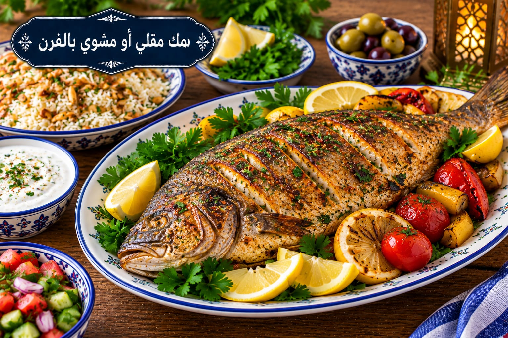

سمك مقلي أو مشوي بالفرن
سمك بتتبيلة الليمون والثوم

مقادير سمك مقلي أو مشوي بالفرن
- 1 كغ سمك منظف
- 4 فصوص ثوم
- عصير ليمونة
- 1½ ملعقة صغيرة ملح
- 1 ملعقة صغيرة كمون
- ½ ملعقة صغيرة فلفل أسود
- 1 ملعقة صغيرة بابريكا
- 3 ملاعق كبيرة زيت للشوي أو زيت مناسب للقلي
طريقة عمل سمك مقلي أو مشوي بالفرن
- جففي السمك جيدًا واعملي شقوقًا خفيفة في السمك الكامل.
- اخلطي الثوم والليمون والملح والكمون والفلفل والبابريكا وتبلي السمك 20–30 دقيقة.
- للشوي: ادهنيه بالزيت واخبزيه على 210°م مدة 20–30 دقيقة حسب السماكة حتى يتفتت اللحم بسهولة بالشوكة.
- للقلي: جففي السطح بعد التتبيل، سخني الزيت واقلي السمك على دفعات حتى يصبح ذهبيًا وينضج من الداخل ثم صفيه جيدًا.